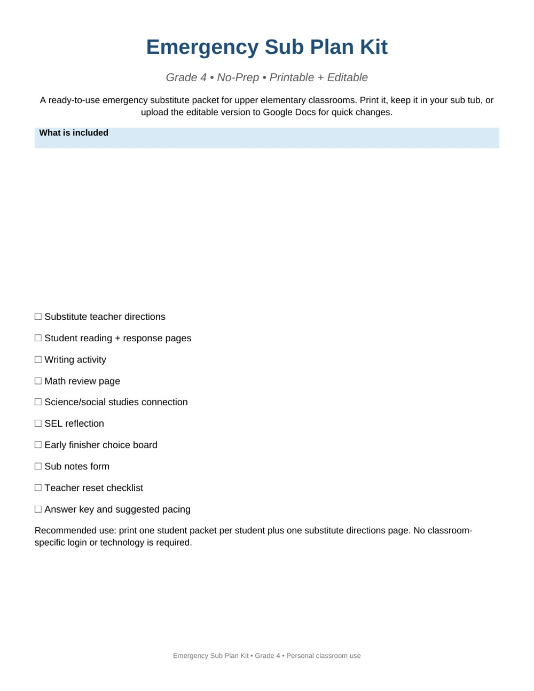
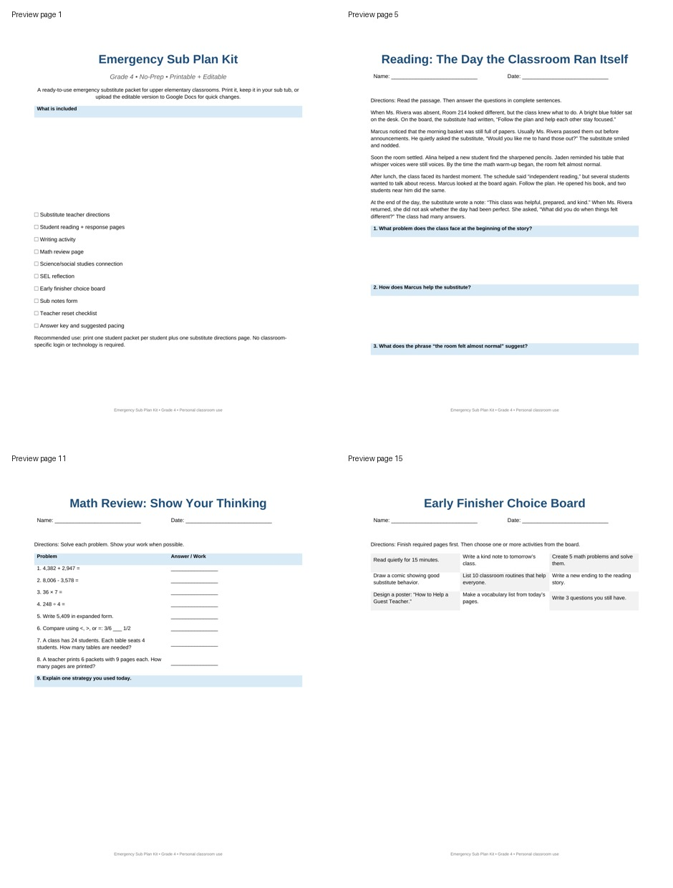

Emergency sub plans you can print tonight and use tomorrow.
A Grade 4 printable + editable sub plan packet built for sick days, surprise meetings, family emergencies, and mornings when you need a calm plan fast.
PDF + editable DOCX. No login required after download. Personal classroom use license included.

$7
What you get: printable PDF, editable Word document, substitute notes, student pages, early-finisher work, and teacher reset checklist.
Print and go
Designed for the night before or morning-of absence. No custom setup, no platform login, no prep sequence.
Editable included
Use the ready PDF or adjust the DOCX for your classroom routines, student needs, and substitute expectations.
Built for real classrooms
Simple directions, structured student pages, and predictable routines so the substitute day does not become chaos.
Included pages
- Substitute instruction sheet
- Daily schedule snapshot
- Reading response
- Writing activity
- Math review page
- SEL reflection
- Early finisher choice board
- Behavior / notes form
- Teacher reset checklist

Get the kit
Click the payment button. After checkout, you will be sent to the download page.
Launch note: If the button is not connected yet, this site was generated before the Stripe Payment Link was added. Run the Termux launcher with STRIPE_SECRET_KEY set to create and inject the live payment link.